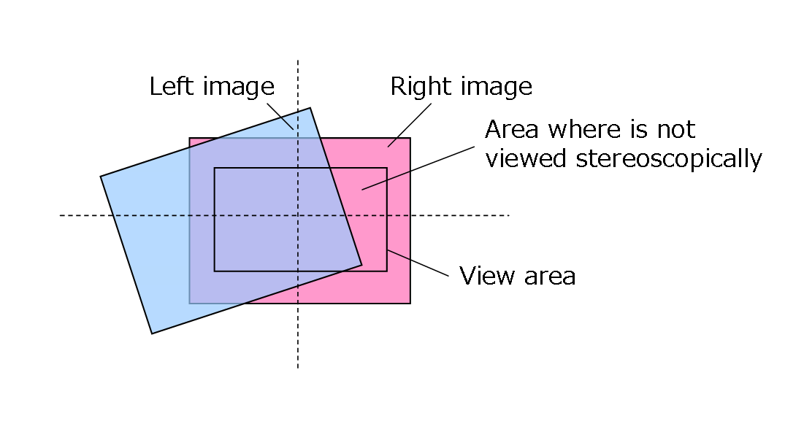
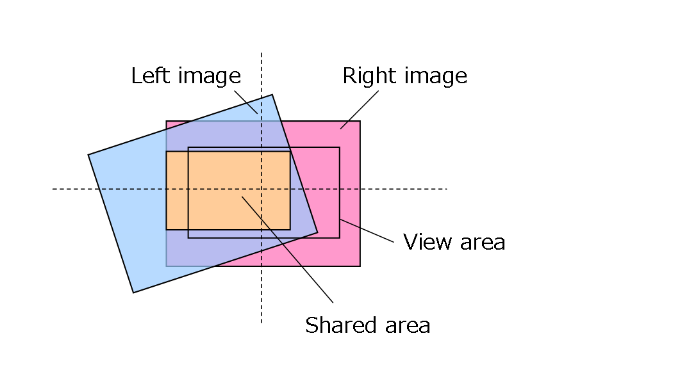
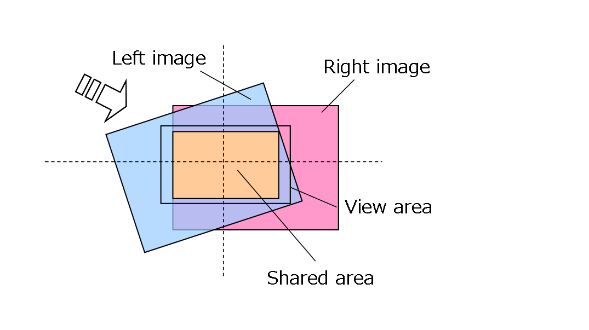
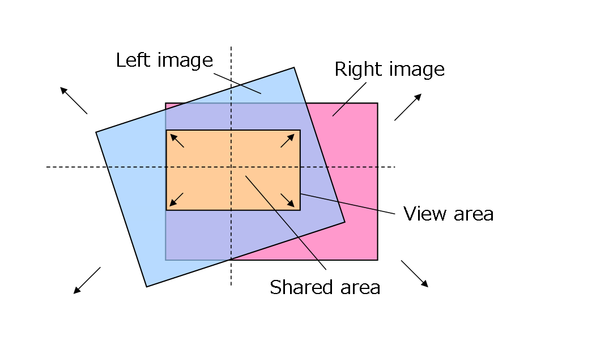

void GetStereoCameraCalibrationMatrixEx(
nn::math::MTX34 * pDstR,
nn::math::MTX34 * pDstL,
f32 * pDstScale,
const StereoCameraCalibrationData & cal,
const f32 translationUnit,
const f32 parallax,
const s16 orgWidth,
const s16 orgHeight,
const s16 dstWidth,
const s16 dstHeight
);
| Name | Description | |
|---|---|---|
| out | pDstR | Specifies the location where the correction matrix for the right camera image is stored. |
| out | pDstL | Specifies the location where the correction matrix for the left camera image is stored. |
| out | pDstScale | Specifies the location where the scale is stored. This is necessary to render in the area where the left and right images overlap, in the size specified by dstWidth and dstHeight. |
| in | cal | Specifies the calibration data. |
| in | translationUnit | Specifies the unit of translation in 3D space. Specify a value that is equal to the ratio between the sizes of the VGA image and screen image, multiplied by the amount of movement to translate the camera image by one pixel. |
| in | parallax | Specifies the parallax in the VGA image. Specify a value that expresses the movement of the left-camera image, with the right-camera image as the reference. This value is measured in pixels. |
| in | orgWidth | Specifies the width of the camera image. If trimming, specify (in pixels) the desired width of the trimmed image. This value is measured in pixels. |
| in | orgHeight | Specifies the height of the camera image. If trimming, specify the desired height (in pixels) of the trimmed image. This value is measured in pixels. |
| in | dstWidth | Specifies the width necessary to render in the size of the area where the left and right images overlap. |
| in | dstHeight | Specifies the height that is necessary to render in the size of the area where the left and right images overlap. |
Calculates a correction matrix to match the left-camera image to the right-camera image in 3D space.
The nn::camera::CTR::GetStereoCameraCalibrationMatrix function returns a matrix for correcting errors in the placement of the stereo camera. Using this matrix, however, will prevent a 3D view on the edges of the screen if the position offset of the system's stereo camera is near the limit, because the edges of the area where the left and right images overlap (for convenience, we will call this the "overlapping area") will be cut off (see figure below). Although the position offset in the figure below is extreme for purposes of illustration, the actual limit of positional offset is smaller than in this figure.

This function returns a correction matrix that will not cut off the edges of the overlapping area, even if the placement error is at the limit. It does this by enlarging the image if the overlapping area is too small.
Unless you have a specific reason, we recommend using this function instead of the nn::camera::CTR::GetStereoCameraCalibrationMatrix function.
The internal processing of this function is as follows.
(1) Finds the rectangle where the left and right images overlap, based on the calibration data and orgWidth/orgHeight (see figure below). Here, the width : height ratio of the rectangle is dstWidth : dstHeight.

(2) If the screen is configured so that the image will appear in the center, it moves the horizontal correction matrix so that the center of the rectangle is in the center of the screen (see figure below).

(3) On some systems, the size of the rectangle may be smaller than dstWidth x dstHeight. On other systems, the size of the rectangle may be larger than dstWidth x dstHeight. Here, we scale the horizontal correction matrix so that the clipped rectangle is the same size as dstWidth x dstHeight (see figure below). For example, if the specification to the function is dstWidth = 400, dstHeight = 240, and the size of the rectangle is 320 x 192, then the correction matrix will scale to 400/320 = 1.25x.

Specify in dstWidth/dstHeight the size of the overlapping rectangle to display; in other words, specify the size of image that you want the rectangle to appear as.
The correction matrix calculated by the above process is stored in pDstR and pDstL. The scale calculated in step (3), above is stored in pDstScale.
The output correction matrix is used to move the camera image horizontally. This matrix is simply a three-dimensional extension of a two-dimensional matrix that expands and shrinks images, rotates around the light axis, and performs horizontal and vertical translations; it does not include three-dimensional transformations, such as rotations about the horizontal and vertical axes.
The translation distance needed for correction will differ depending on the size of the image, the size of the object, and such graphics settings as the perspective. If you use nn::camera::SetSize to set the image size to other than VGA (640 x 480), the camera will shrink the image internally, causing the subject to appear smaller. The amount of translation needed for correction will then be reduced by this amount. The amount of translation needed also varies depending on whether you display the image pixel by pixel or display it after scaling. Specify the argument translationUnit as the translation distance required to move the camera image by one pixel, multiplied by the ratio of the size of a VGA image to the size of the image you wish to display.
For example, let us assume that you are displaying a VGA image pixel by pixel, and you have configured your graphics so that the translation distance needed to move that image by one pixel is 1.0f. In this case, specify translationUnit as 1.0f. Next, let us assume that you will change the image size to 512 x 384. If you do not stretch the image using texture mapping, the subject will be 0.8 times the size of a VGA image (512 / 640). This reduces the amount of translation needed for correction, so specify translationUnit as 1.0f x 0.8f = 0.8f. Note that if you enlarge the object, and display the subject in the same way as you display a VGA image pixel by pixel before applying the correction matrix, then translationUnit will be 1.0f. Conversely, if you enlarge the object after applying the correction matrix, translationUnit will be 0.8f because you are enlarging the image after translation.